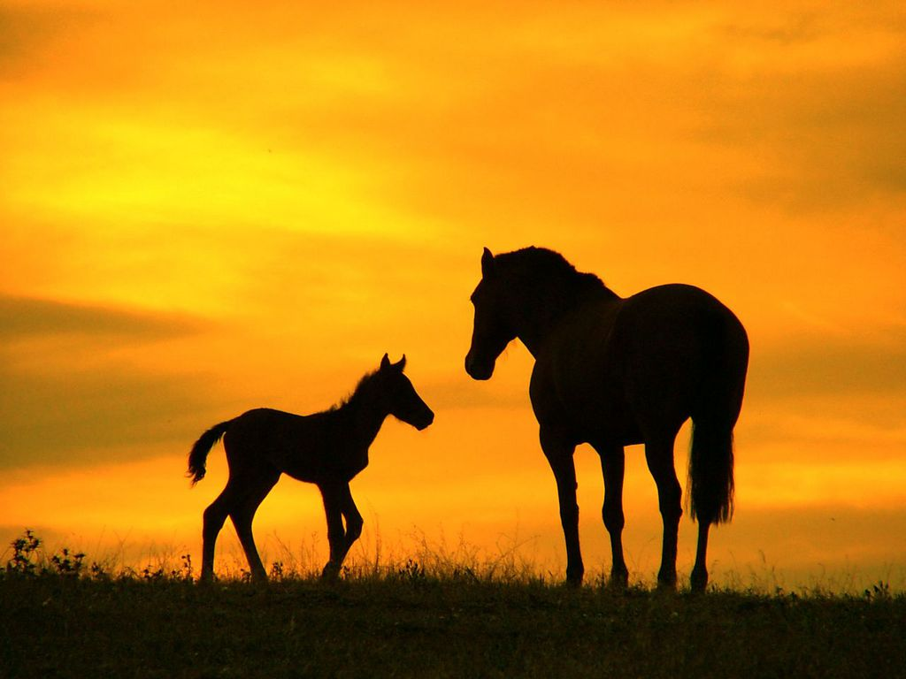
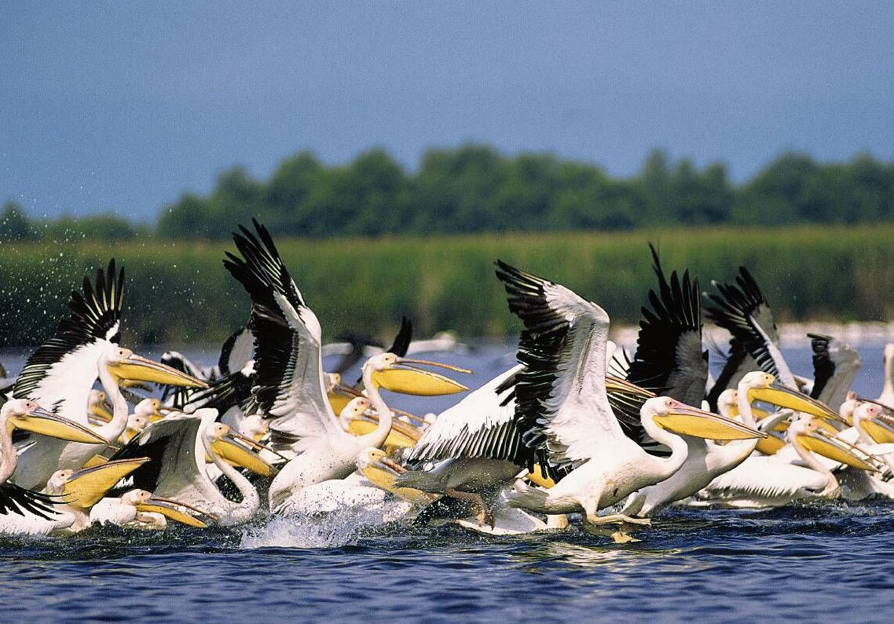
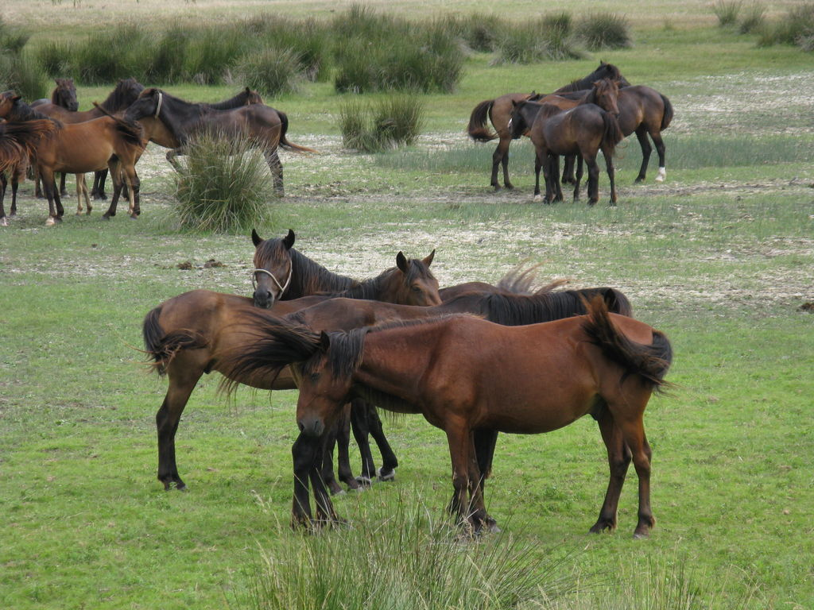
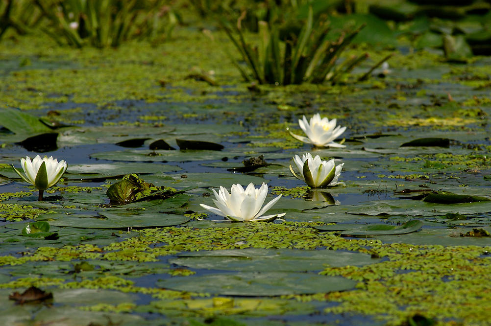
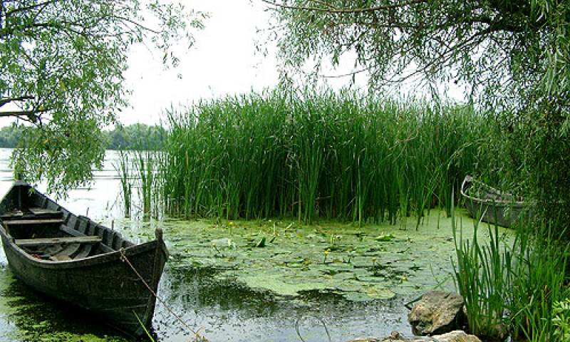
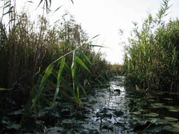

Fauna
Delta Dunării este un adevărat paradis faunistic. Aici vietuieste 98% din fauna acvatică europeană, întreaga faună de
odonate, de lepidoptere acvatice si de moluste gasteropode de Europa si tot aici îsi găsesc refugiul mamifere rare cum sunt Mustela
lutreola, Lutra lutra si Felis silvestris. Vertebratele care, prin prezenta lor, dau nota specifică faunei deltei. Amfibienii sunt reprezentati
prin 2 specii de caudate si 6 specii de anure, iar reptilele prin 8 specii, majoritatea serpi (4 specii).
 Pestii sunt prezenti prin 65 specii, cei mai multi de apă dulce (60%), restul migrând primăvara din Marea Neagră. Intre acestia din urmă, sturionii si scrumbiile au rol important, atât stiintific, cât si economic. Păsările sunt cele care au creat faima deltei, cunoscută, încă de la începutul secolului ca un paradis avian. Renumele se datorează celor 327 specii pe care le putem întâlni în deltă si care reprezintă 81% din avifauna României. Dintre acestea cuibăresc 218 specii, restul de 109 specii trecând prin deltă si rămânând diferite perioade de timp toamna, iarna si primăvara. Păsările acvatice sunt cele mai numeroase : cuibărersc 81 specii si trec prin deltă 60 specii, în total 141 specii, ceea ce reprezintă 82% din avifauna acvatică europeană. Nucleul avifaunei este format din 75 specii a căror viată este legată de prezenta apei. Acestea se grupează în 5 tipuri ecologice principale : specii strâns legate de apă, strict stenotope (cufundari, corcodei, furtunari, pelicani, cormorani, unele anatide), specii de stufării (toate speciile de paseriforme acvatice), specii de tărmuri (stârci, lopătari, tigănusi, unele anatide), specii de pajisti hidrofile cu vegetatie bogată continuate cu stufării (ralide), specii de tărmuri marine (unele laride).  Multe specii, mai ales dintre rate, gâste, pescărusi, apar frecvent în diferiti biotopi. Speciile accesorii sunt cele care se integrează secundar în avifauna acvatică, devenind din ce în ce mai numeroase pe măsura transformării ecosistemelor acvatice. Zăvoaiele sunt populate de silvii, muscari, filomele, pitigoi, cinteze, la care se adaugă, în timpul cuibăritului, rate, cormorani si stârci. In pădurile de pe câmpurile marine Letea si Caraorman cuibăresc 64 specii tipice avifaunei pădurilor nemorale (silvii, mierle, ciocănitori, măcăleandru, pitigoi, graur, precum si codalbul (Haliaetus albicilla), gaia brună, acvila pitică, vulturul pescar etc. Fazanul (Phasianus colchicus) a fost introdus prin colonizare populatia dezvoltându-se rapid. In pajistile de stepă nisipoasă sunt specifice potârnichea, prepelita, cicârliile, pasărea ogorului (Burchinus oedicnemus). In satele deltei, pe lângă gospodării, sunt frecvente gugustiucul, vrabia de casă, rândunica, barza, lăstunul. Flora
Cercetările recente au dus la identificarea a 955 specii de cormofite spontane, reprezentând:
-elemente eurasiatice (28%) -estice (24%) -europene (14%) -cosmopolite si adventive. Din punct de vedere ecologic numai un sfert dintre specii (26%) sunt legate de mediul acvatic (hidrofile, higrofile si higromezofile), restul fiind mezofile, xerofile, eurifile, halofile, psamofile. Nota dominantă o dau stuful, papura, sălciile, plantele plutitoare (nuferii, cornacii, cosorul). In deltă îsi găsesc refugiul o serie de specii rare, cum sunt : Ephedra distachya, Carex colchica, Nymphaea candida, Convolvulus persicus.  In Delta Dunării predomină vegetatia de mlastină stuficolă, care ocupă cca. 78% din suprafata totală. Principalele specii stuful, papura, rogozul, în amestec cu salcia pitică si numeroase alte specii. Vegetatia de sărături ocupă 6% din total, dezvoltându-se pe soluri saliniazte si solonceacuri marine. Specificul este dat de prezenta speciilor: Salicornia patula, Juncus marinus, Juncus littoralis, Plantago cornuti. Zăvoaiele sunt păduri de salcie, frasin, arin, plop, care cresc pe grindurile fluviatile, sunt periodic inundate si se dezvoltă pe 6% din totalul suprafetei. Sunt specifice deltei fluviale, unde dau nota caracteristică peisajului. Intâlnim patru tipuri de zăvoaie : zăvoaiele care cresc pe grindurile fluviatile joase, sunt inundate cea mai mare parte a anului si sunt formate mai ales din Salix alba si Salix fragilis; pe grindurile mai înalte cresc zăvoaile formate din Salix alba, Populus alba, Populus canescens; pe grindurile fluviatile cele mai înalte cresc zăvoaie foarte rar inundate formate din plop (Populas canescens si P.alba), la care se adaugă speciile plantate : plopul negru hibrid, artarul american si frasinul de Pensilvania ; un tip de zăvoi mai rar este arinisul (predomină Alnus glutinosa) care apare pe grindurile fluviatile din delta marină. Vegetatia pajistilor de stepă nisipoasă este extinsă pe 3% din totalul deltei, dezvoltându-se mai ales pe câmpurile marine Letea, Caraorman si Sărăturile.Sunt specifice speciile Festuca bekeri, Secale sylvestris, Carex colchica, Ephedra distachya.  Vegetatia pajistilor mesofile de grind se dezvoltă pe cca. 3% din totalul suprafetei deltei, în special pe pe grindurile fluviale supuse inundării periodice. Predomină Glyceria maxima, Elytrigia repens. Vegetatia acvatică din ghioluri, bălti si japse ocupă 2% din totalul deltei. Pentru vegetatia submersă sunt specifice speciile Ceratophyllum submersum, Myriopyllum verticillatum, Potamogeton sp., Helodea canadensis.Vegetatia plutitoare este mai variată. Predomină Lemna minor, Salvinia natans, Spirodela polyrrhiza, Nymphoides peltata, Nymphaea alba, Nuphar luteum, Trapa natans. Vegetatia emersă este dominată de stuf (Phragmites australis), papură (Typha latifolia si T. angustifolia), pipirig (Schoenolectus lacustris). Vegetatia tufisurilor dezvoltate pe nisipurile câmpurilor marine sau pe cele de pe tărmurile marine active se extind numai pe 1% din totalul suprafetei deltei si sunt dominate de Tamarix ramosissima, Elaeagnus angustifolia, Hippophae rhamnoides. Pădurile de câmpurile marine Letea si Caraorman sunt sleauri de silvostepă, numite local hasmace, cu stejar brumăriu (Quercus pedunculiflora), stejar pedunculat (Q. robur), frasin (Fraxinus angustifolia), plop tremurător (Populus tremula), ulm (Ulmus foliacea), si cu plantele agătătoare Periploca graeca, Vitis silvestris, Hedra helix. Reprezintă nmai 0,8% din totalul suprafetei Deltei Dunării.  Formatiune specifică stufăriilor masive, plaurul este un strat gros de 1-1,6m format dintr-o împletitură de rizomi de stuf si de rădcini ale altor plante acvatice în amestec cu resturi organice si sol. Initial fixat, plaurul se desprinde de fundul ghiolurilor si băltilor transformându-se în insule plutitoare cu diferite mărimi care, împinse de vânt, se deplasează pe suprafata apei. Vegetatia plaurului diferă de restul stufăriilor. Stuful (Phragmites australis) se dezvoltă aici în cele mai bune conditii, fiind mai înalt si mai gros. Alături de stuf întâlnim rogozul, menta, feriga de apă (Nephrodium thelypteris), cucuta de apă, troscotul, salcia pitică, precum si plantele agătătoare Calystegia sepium si Solanum dulcamara. Pe plaur se formează coloniile de pelicani comun si cret. Tot pe plaur trăiesc porcul mistret, câinele enot, bizamul, lutra, nurca, vulpea. |
|---|